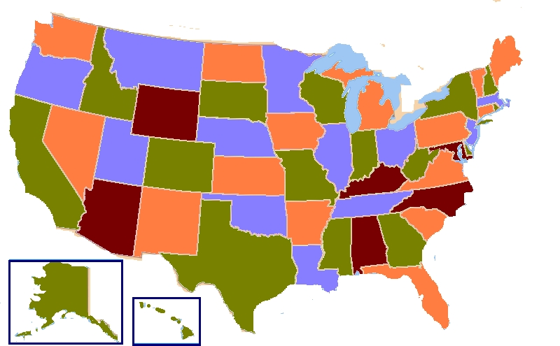

80-110: The Nature of Mathematical Reasoning
Carnegie Mellon University
Spring 2015
Homework 2
The map coloring problem was a popular subject of investigation for mathematicians beginning in the mid-19th century. The problem goes like this.
A map is a division of the plane, or a finite piece of the plane, into finitely many regions. We can assume that the regions are polygons with straight sides, but this isn't strictly necessary. For instance, the following image could count as a map, even though its regions (states) have curved sides:

(Side note: we will also assume that our regions are connected. That is, the upper peninsula of Michigan, which doesn't touch the main part of the state, will count as a separate region for our purposes.)
A coloring of a map assigns some color to each region. We call a coloring proper if no two regions that share a border have the same color. Regions that meet only at a point- for instance, New Mexico and Utah- do not count as sharing a border.
The map coloring problem asks: what is the smallest positive integer n such that EVERY possible map can be properly colored using no more than n colors?
Your assignment: make a conjecture about the solution to the map coloring problem. Explain to me how you came to that conjecture, and why you think it's true. Why didn't you guess a smaller value of n? Can you give me evidence (a counterexample) that the statement is false for smaller values of n?
Bonus points if you can prove that your conjecture is true!
Note: there's lots and lots of discussion of this problem online and in textbooks. Answer these questions without looking anything up! If you've heard of the problem before, that's fine, but make a note of it somewhere on your assignment.